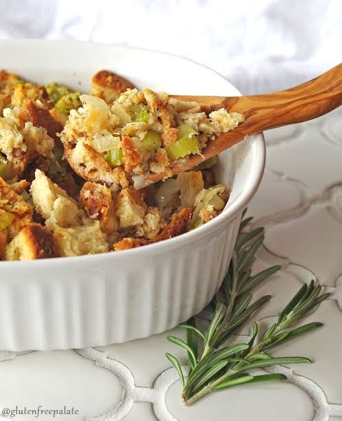

<!DOCTYPE html>
<html lang="en">
    </html>
<head>
    <meta charset="UTF-8">
    <Title>Thanksgiving Stuffing</title>
    </head>
    </html> 
<html>
<body>    

    <h1>Thanksgiving Stuffing</h1>
    
 <p>I make this stuffing every Thanksgiving. I make it from the heart.</p> 
 <p>This is a rough copy of the recipe because in real life I measure <strong>absolutely nothing!</strong></p>
<br>
<ul> <h3>Ingredients</h3>
    <li>2 loaves of Basic White Bread. 
        <br> 
        <em>I always let the bread loaves stay over night with the twist tie off and bread open.</em></li>
    <li>2 sticks of <strong>Salted</strong> Butter</li>
    <li><strong>Mirepoix Base Veggies and Spices</strong>
    <ul>
        <li>Onion</li>
        <li>Celery</li>
        <li>Carrot</li>
        <li>Fresh Thyme and sage <em>about half TB each</em></li>
    </ul></li>
    <li>4 Eggs 
        <br>
        <em>for a healthier version I only use 2 full eggs and 2 eggs of just egg whites.</em></li>
    <li>1 cup of Milk 
        <br>
        <em>I use skim milk but you can use any cow milk you want. I have never tried this recipe with any milk alternatives.</em></li> 
    <li><strong>Spices and Herbs</strong> <em>I don't measure these. It is all by smell.
    </em>
        <ul>
            <li>Garlic Powder</li>
            <li>Onion Powder</li>
            <li>Poultry Seasoning</li>
         </ul>
    </li> 
    <li>2 Cups of Chicken or Turkey Stock 
        <br>
        <em>You probably won't use it all. It is to add the final amount of moisture to the stuffing mix.</em></li> 
</ul>
<br>
<ol><h3>Steps to Delicious Stuffing</h3>
    <li>Preheat oven to 350 and grease your lasgana pan</li>
    <li>In a stock pot melt your two sticks of butter 
        <br>
        <em>Be careful not to burn the butter. You can brown it, but do not burn it</em></li>
    <li>Add Mirepoix Base Veggies and Spices to the melted butter. Simmer, stirring occasionally until onions are translucent
    <br>
    <em>While waiting for your Mirepoix to cook, you should start breaking up your bread into bite-size pieces into a <strong>BIG</strong> bowl</em>
    </li>
    <li>Whisk eggs and milk together with the spices and herbs</li>
    <li>Once your Mirepoix is done and cooled down enough to touch with your hands add it to your bowl of bread.</li>
    <li>Mix the bread and Mirepoix with your hands.
        <br>
        <em>You need to really squish the mixture together well.</em>
    </li>
    <li>Once throughly combined add in your egg and milk mixture.
     <br>
     <em>Again mix it really well with your hands you have to squish it all through the bread</em>   
    </li>
    <li>Add in and mix the stock until the mixture has the stickiness of moist bread dough</li>
    <li>After everything is mixed together add to your greased pans and cover it in foil</li>
    <li>Bake in over for about 40 minutes- the stuffing should feel bouncy not squishy. Then remove the foil and bake for 10 min</li>
    <li>Remove from over and let sit for 10 minutes.</li>
    <li><strong><em>Enjoy the best stuffing of your life</em></strong></li>

</ol>


<br>
<a href="../index.html">Home</a>


</body>
</html>    


